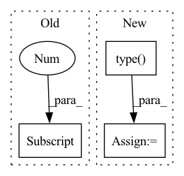

Pattern ID :9890
Before Change
whole_bond_idxs = native_idxs
// 2. ATTRS: encode bond -> attrs
bond_norms = dist_mat[ whole_bond_idxs[0] , whole_bond_idxs[1] ]
bond_vecs = x[ whole_bond_idxs[0] ] - x[ whole_bond_idxs[1] ]
bond_vecs /= (bond_norms + eps).unsqueeze(-1)
bond_norms_enc = encode_dist(bond_norms, scales=needed_info["bond_scales"]).squeeze()After Change
dist_mat = torch.cdist(x, x, p=2)
// normal buckets
bond_buckets = torch.zeros(x.shape[:-1], x.shape[-2], device=device).type( precise)
if buckets:
// count from latest degree of adjacency given
bond_buckets = torch.bucketize(dist_mat, cutoffs)
bond_buckets[native_idxs[0], native_idxs[1]] = cutoffs.shape[0]In pattern: SUPERPATTERN
Frequency: 5
Non-data size: 3
Instances Fragment ID: 35368783
Project Name: lucidrains/geometric-vector-perceptron
Commit Name: 5a40792004e203e994ed7c0cf6dbf25d7312c8c5
Time: 2021-03-28
Author: ericalcaide1@gmail.com
File Name: examples/data_utils.py
M Class Name: AnonimousClass
N Class Name: AnonimousClass
M Method Name: encode_whole_bonds(6)
N Method Name: encode_whole_bonds(6)
M Parent Class:
N Parent Class:
M File Name: examples/data_utils.py
N File Name: examples/data_utils.py
M Start Line: 408
M End Line: 452
N Start Line: 390
N End Line: 456
Before Change
length * targets.shape[1], max_len=targets.shape[1],
)
if len(targets.shape) == 3:
mask = mask.unsqueeze(2).repeat(1, 1, targets.shape[2] )
// Compute, then reduce loss
loss = loss_fn(predictions, targets) * maskAfter Change
// Handle any dimensionality of input
while len(length_mask.shape) < len(mask.shape):
length_mask = length_mask.unsqueeze(-1)
length_mask = length_mask.type( mask.dtype)
mask *= length_mask
// Compute, then reduce loss
loss = loss_fn(predictions, targets) * mask Fragment ID: 35368787
Project Name: speechbrain/speechbrain
Commit Name: f9198e1170fc6123693643401693dc6da9308f3f
Time: 2020-11-30
Author: plantinga.peter@protonmail.com
File Name: speechbrain/nnet/losses.py
M Class Name: AnonimousClass
N Class Name: AnonimousClass
M Method Name: compute_masked_loss(6)
N Method Name: compute_masked_loss(6)
M Parent Class:
N Parent Class:
M File Name: speechbrain/nnet/losses.py
N File Name: speechbrain/nnet/losses.py
M Start Line: 621
M End Line: 628
N Start Line: 619
N End Line: 629
Before Change
self.cheb_polynomials = cheb_polynomials
self.in_channels = in_channels
self.out_channels = out_channels
self.DEVICE = cheb_polynomials[0] .device
self.Theta = nn.ParameterList([nn.Parameter(torch.FloatTensor(in_channels, out_channels).to(self.DEVICE)) for _ in range(K)])
def forward(self, x, spatial_attention):After Change
cheb_polynomials = [np.identity(L_tilde.shape[0]), L_tilde.copy()]
for i in range(2, K):
cheb_polynomials.append(2 * L_tilde * cheb_polynomials[i - 1] - cheb_polynomials[i - 2])
self.cheb_polynomials = [torch.from_numpy(i).type( torch.FloatTensor) .to(DEVICE) for i in cheb_polynomials]
self.in_channels = in_channels
self.out_channels = out_channels
self.DEVICE = DEVICE Fragment ID: 35368786
Project Name: benedekrozemberczki/pytorch_geometric_temporal
Commit Name: 2775ce5253580a592becb764f1a76d82c8e76e6e
Time: 2021-03-17
Author: He_YX@outlook.com
File Name: torch_geometric_temporal/nn/convolutional/astgcn.py
M Class Name: cheb_conv_withSAt
N Class Name: cheb_conv_withSAt
M Method Name: __init__(6)
N Method Name: __init__(5)
M Parent Class: nn.Module
N Parent Class: nn.Module
M File Name: torch_geometric_temporal/nn/convolutional/astgcn.py
N File Name: torch_geometric_temporal/nn/convolutional/astgcn.py
M Start Line: 58
M End Line: 61
N Start Line: 52
N End Line: 75
Before Change
z_q = self.embedding(encoding_indices).view(z.shape)
perplexity = None
//Using F.one_hot causes num_class error
encodings = torch.zeros(encoding_indices.shape[0] , self.num_tokens, device=z.device)
encodings.scatter_(1, encoding_indices.unsqueeze(1), 1)
// Use EMA to update the embedding vectorsAfter Change
z_q = self.embedding(encoding_indices).view(z.shape)
perplexity = None
encodings = F.one_hot(encoding_indices, self.num_tokens).type( z.dtype)
// Use EMA to update the embedding vectors
if self.training:
//EMA cluster size
encodings_sum = torch.sum(encodings)
self.cluster_size.data.mul_(self.decay).add_(encodings_sum, alpha=1 - self.decay)
//EMA embedding weight Fragment ID: 35368785
Project Name: tgisaturday/dalle-lightning
Commit Name: ea9b0b9a5ec09e67761b1588106f670a3ad7bd77
Time: 2021-07-28
Author: jamesk1228@gmail.com
File Name: pl_dalle/modules/vqvae/quantize.py
M Class Name: EMAVectorQuantizer
N Class Name: EMAVectorQuantizer
M Method Name: forward(2)
N Method Name: forward(2)
M Parent Class: nn.Module
N Parent Class: nn.Module
M File Name: pl_dalle/modules/vqvae/quantize.py
N File Name: pl_dalle/modules/vqvae/quantize.py
M Start Line: 72
M End Line: 83
N Start Line: 64
N End Line: 83
Before Change
cur_schema = torch.tensor(int_to_binary_label_list(int(schema), num_classes)[::-1], dtype=torch.int8)
cand_idx = weight == float(schema)
if use_vfl:
cand_idx = cand_idx.nonzero(as_tuple=True)[0]
cand_idx = torch.tensor(np.intersect1d(neg_idx.cpu().numpy(), cand_idx.cpu().numpy()))
else:
cand_idx *= neg_mask
cand_idx = torch.nonzero(cand_idx, as_tuple=True)After Change
if valid_label_mask is not None:
neg_mask = targets.sum(axis=1) == 0 if use_vfl else targets == num_classes
neg_idx = neg_mask.nonzero(as_tuple=True)[0]
cross_mask[neg_idx] = valid_label_mask[neg_idx].type( torch.int8)
if use_vfl:
loss = varifocal_loss(inputs, targets,
weight=weight, Fragment ID: 35368784
Project Name: openvinotoolkit/model_preparation_algorithm
Commit Name: 422e1c4fb8c3e8efc7f584902a0cdbbb895387cd
Time: 2022-06-15
Author: harim.kang@intel.com
File Name: mpa/modules/models/losses/cross_focal_loss.py
M Class Name: AnonimousClass
N Class Name: AnonimousClass
M Method Name: cross_sigmoid_focal_loss(10)
N Method Name: cross_sigmoid_focal_loss(10)
M Parent Class:
N Parent Class:
M File Name: mpa/modules/models/losses/cross_focal_loss.py
N File Name: mpa/modules/models/losses/cross_focal_loss.py
M Start Line: 38
M End Line: 64
N Start Line: 33
N End Line: 39